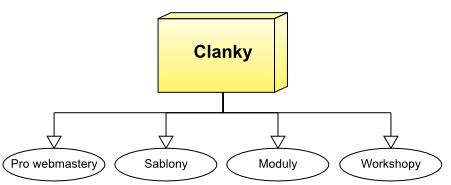
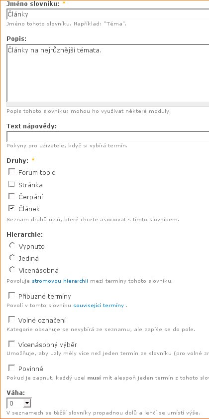
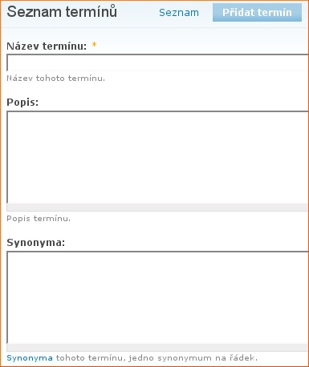
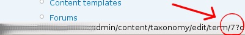

Pokračujeme v seriálu o kategorizaci obsahu. V minulém díle jsme si ukázali, co je modul Taxonomy a k čemu slouží. Dnes se ho naučíme ovládat.
Ukázali jsme si základní použití Taxonomy jako modulu pro kategorizaci článků, viz. obrázek:
Nyní se podíváme, jak tuto strukturu vytvořit v Drupalu. Následující postup si zapamatujte a vyzkoušejte, jeho začátek bude stejný pro všechny další příklady.
Zapneme modul Taxonomy v Administrace → Prvky webu → Moduly. Pokud používáme český profil, měl by být zapnutý již po instalaci a jdeme na Administrace → Správa obsahu → Kategorie. Toto je základní obrazovka administrace modulu Taxonomy. Zde později uvidíme vypsané slovníky a možnost slovník editovat či přidat termíny.
Vedle nadpisu Kategorie klikneme na odkaz Přidat slovník. Objeví se podobný formulář:
V něm vyplníme postupně údaje:
Formulář odešleme. Vznikne nám slovník Články. Jak již víme z minulého dílu, slovník je pouze kontejner na termíny. U nového slovníku tedy klikneme na odkaz Přidat termíny.
Tento formulář je již velmi jednoduchý, napíšeme Název termínu, tedy Pro webmastery, napíšeme případný popis, zbylé pole ignorujeme a odešleme. Takto to uděláme se všemi termíny z našeho příkladu.
V tomto okamžiku máme hotovou základní kategorizaci našich článků. Projeďte si možnosti v administrační stránce – editaci slovníku, výpis termínu a jejich úpravu.
Nastal čas vytvořit nějaké články. Klikněte v menu na Vytvořit obsah → Článek. Hned ve formuláři uvidíte nové pole pro výběr kategorie článku. Vytvořte si takto několik článků do různých kategorií.
To, na co čekáte, je zobrazování seznamu článků z kategorie. Drupal v základní instalaci umožňuje zobrazovat obsah přirazený jednotlivým termínům. Z administrační obrazovky Taxonomy se vydáme směrem Seznam termínů u našeho slovníku. U každého termínu je odkaz upravit.
Na tento odkaz pouze ukážeme, v prohlížeči dole se nám zobrazí cesta, na kterou odkaz vede:
Cílem našeho pátrání je identifikátor našeho termínu, číslo, kterému budeme říkat ID. Náš termín má číslo 7.
Nyní napíšeme do adresního řádku prohlížeče: http://www.example.com/…nomy/term/ID, v našem případě tedy http://www.example.com/taxonomy/term/7. Již vidíte, že tento odkaz Vám zobrazí seznam článků v dané kategorii.
Možná si říkáte, že uvedený postup zjištění ID je složitý. Ano, je, ale má za cíl Vás naučit princip, jakým se informace v Taxonomy zobrazují. K odkazu na seznam článků se totiž můžete dostat mnohem jednodušeji. Stačí na stránce Seznamu termínů kliknout na jméno termínu a systém Vás automaticky odkáže právě na námi zjištěný odkaz.